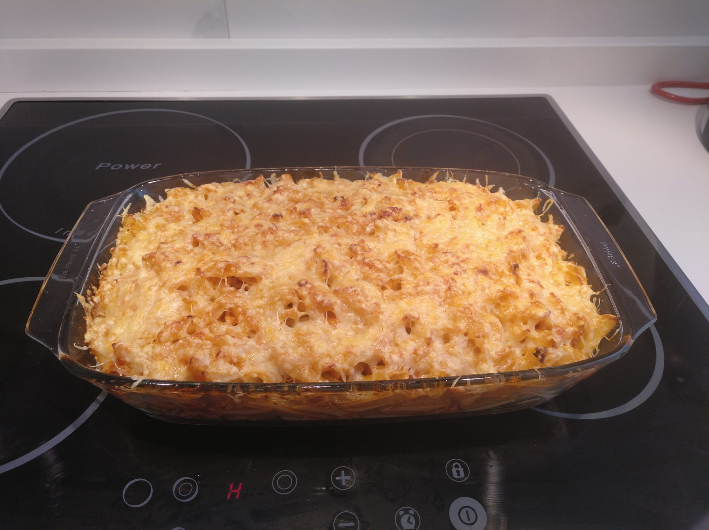
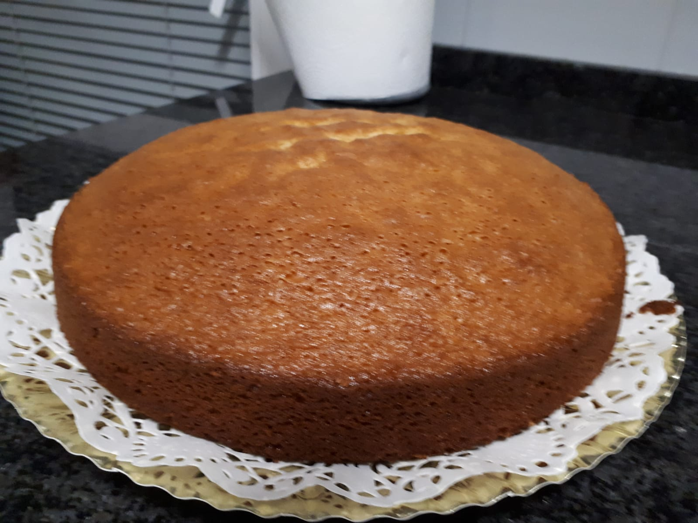

Macarrones Gratinados
Macarrones con tomate y queso gratinado

Bizcocho de limón
Bizcocho muy esponjoso con sabor a limón

Croquetas de jamón
Croquetas de jamón cremosas y sabrosas como nunca las habrás probado